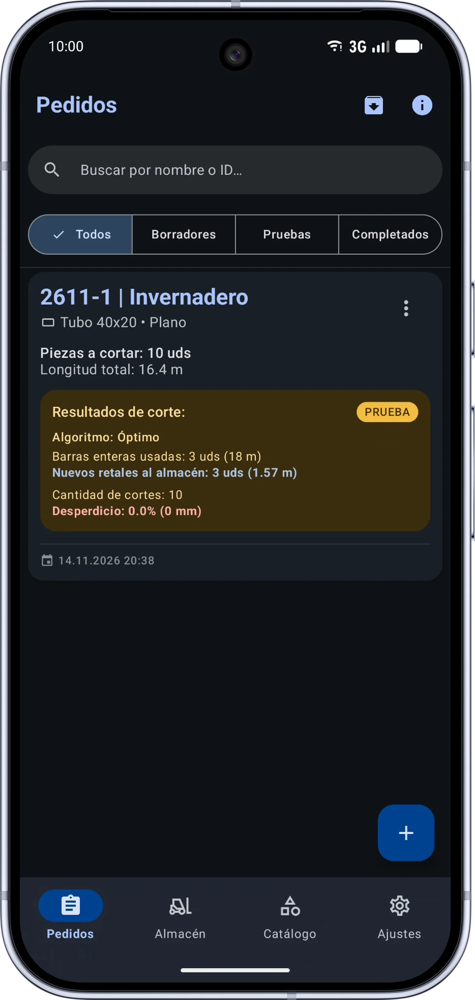
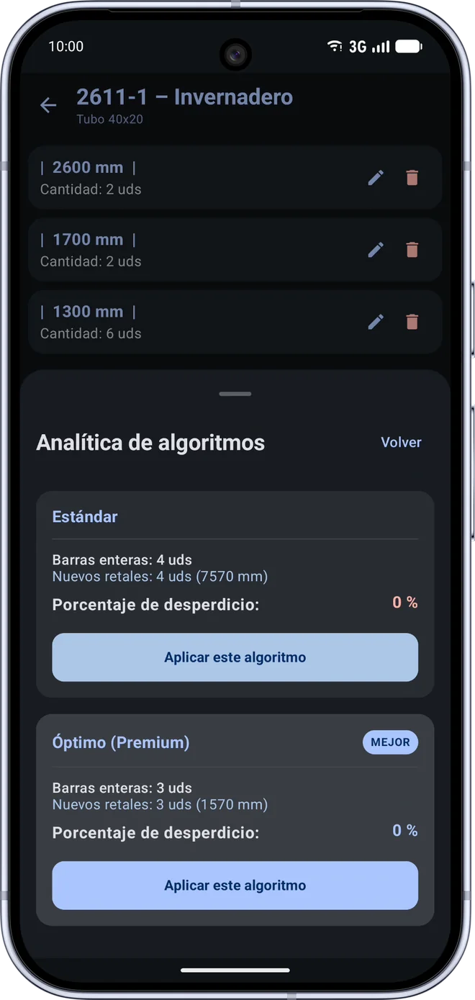
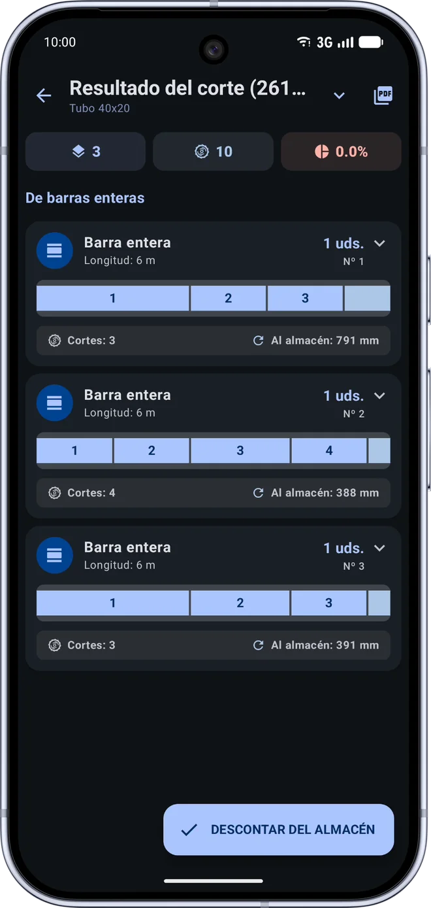
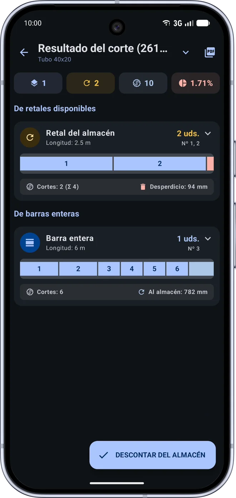

Menos desperdicio,
más piezas por barra.
Optimizador de cortes lineales (1D) para tubo cuadrado y rectangular, perfiles de aluminio y PVC, tubo redondo, varilla y madera. Indica el grosor del disco, el saneado de borde y los cortes a inglete, lleva el almacén de barras y retales y obtén el plano de corte en PDF en segundos.

Captura:assets/linear-cutting/screen-main-es.png
Por qué cortar «a ojo» sale caro
El tubo de acero y los perfiles de aluminio y PVC no paran de subir. Cada inglete mal calculado o cada retal olvidado en el taller se come tu ganancia.
- • Olvidar el disco y el saneado: si no cuentas los 3–4 mm del disco y el corte del borde, la última pieza de la barra sale corta.
- • Material perdido en ingletes: cortar perfiles a 45° sin acomodar bien las piezas vecinas desperdicia decenas de centímetros por barra.
- • Retales olvidados: los sobrantes de 80–200 cm se acumulan en un rincón mientras se siguen cortando barras nuevas de 6 metros.
- • Dos algoritmos y comparación: el Estándar calcula al instante; el Óptimo (Premium) busca entre cientos de combinaciones el plano con menos desperdicio.
- • Ingletes y 4 tipos de perfil: barra simple, perfil simétrico, asimétrico y rectangular (plano o de canto), con marcas de pieza girada (🔄) y reflejada (↔️).
- • Almacén bajo control: primero usa los retales que tienes, descuenta las barras cortadas, guarda los nuevos retales útiles y registra cada movimiento.
Optimizador de cortes y almacén en tu taller
Ingletes, grosor de disco y 4 tipos de perfil
Tiene en cuenta el grosor del disco, el saneado de borde y la sección del perfil: barra simple, tubo cuadrado, perfil asimétrico de ventana o fachada y tubo rectangular (plano o de canto).
Almacén, retales e historial
Barras enteras y retales útiles con stock mínimo por material. Haz una prueba de cálculo para presupuestar o descuenta el pedido del almacén: los nuevos retales se guardan solos y el descuento se puede deshacer.
Plano de corte en PDF y Excel
Esquema visual de cada barra con ingletes y porcentaje de desperdicio; los esquemas iguales se agrupan. Exporta el plano a PDF para el taller y el almacén a Excel (Premium).
Comparar algoritmos
Compara el algoritmo Estándar con el Óptimo: cuántas barras hacen falta, cuántos retales quedan y qué porcentaje se desperdicia, antes de hacer un solo corte.
Sin internet y lista desde Excel
Funciona en el taller o en la obra sin conexión. Carga la lista de piezas desde Excel (.xlsx, .xls), TXT o CSV y guarda copias de seguridad de toda tu base de datos (Premium).
Tus datos en tu teléfono y 12 idiomas
Sin registro ni nube: el almacén y los pedidos se quedan en tu dispositivo. Disponible en 12 idiomas, español incluido, con tema oscuro y claro.
Pensada para el taller
Interfaz de alto contraste, ingletes bien visibles y paso rápido entre pedidos y almacén.

screen-input-es.pngComparación de algoritmos
Comparación de algoritmos

screen-layout-es.pngPlano de corte
Plano de corte y exportación a PDF

screen-stats-es.pngRetales del almacén
Retales del almacén primero
Tutoriales en video
Cinco lecciones cortas en español: del primer pedido al plano de corte en PDF.
Ver todas las lecciones en YouTube → · Videos cortos en TikTok →
Preguntas frecuentes
¿Qué tipos de perfil y cortes a inglete admite Linear Cutting?
La app admite 4 tipos de perfil: barra simple (varilla, tubo redondo o cortes solo a 90°), perfil simétrico (tubo cuadrado, por ejemplo 40x40), perfil asimétrico (marcos de ventanas, perfiles de fachada) y perfil rectangular (por ejemplo 60x40) colocado plano o de canto. Cada pieza puede llevar cortes a inglete y el plano marca las piezas giradas (🔄) y reflejadas (↔️).
¿Cómo funcionan el almacén, la prueba de cálculo y los retales?
Primero haces una prueba de cálculo: ves cuántas barras necesitas sin tocar el almacén. Con «Descontar del almacén» la app resta las barras y los retales usados y guarda los nuevos retales útiles (mayores que el retal mínimo del material). Si te equivocaste, puedes deshacer el descuento: el material vuelve al almacén.
¿Qué diferencia hay entre los algoritmos y cómo se tiene en cuenta el grosor del disco?
El grosor del disco se descuenta automáticamente en cada corte y el saneado de borde al inicio de cada barra. El algoritmo Estándar (gratis) calcula al instante. El algoritmo Óptimo (Premium) prueba cientos de combinaciones y en pedidos complejos ahorra más material. Con «Comparar algoritmos» ves los dos resultados antes de cortar.
¿Puedo cargar la lista de piezas desde Excel y exportar el plano?
Sí. La lista de piezas se carga desde un archivo Excel (.xlsx, .xls), TXT o CSV: columna A el largo, B la cantidad y C una nota. El plano de corte se exporta a PDF y el almacén a Excel (.csv) con Premium. Todo funciona sin internet.
Corta con precisión y controla tu almacén
Instala Linear Cutting gratis y ahorra perfiles, tubos y tiempo desde tu próximo pedido.